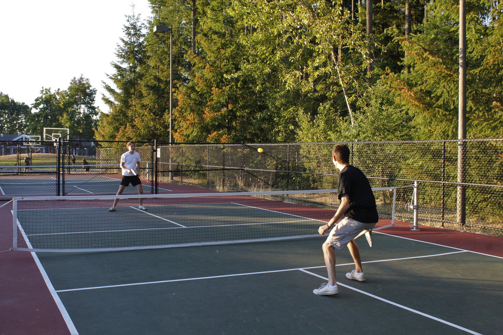
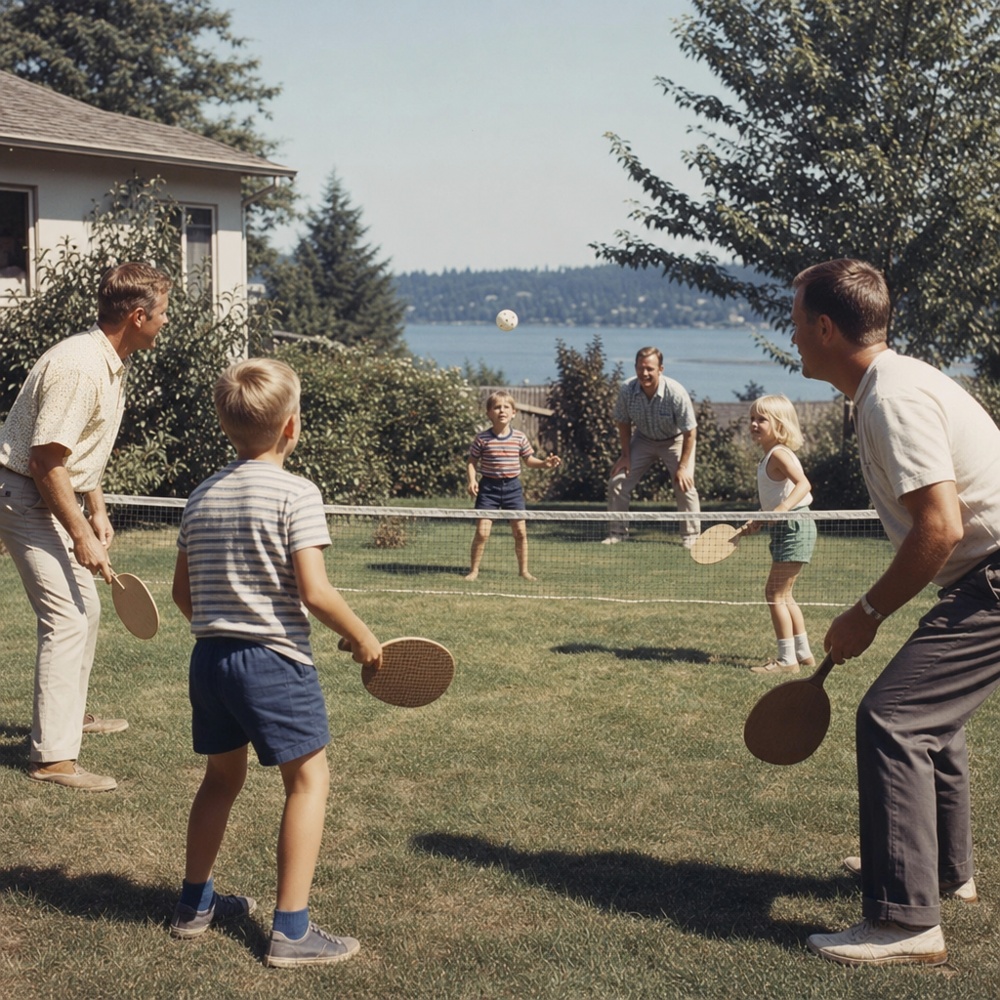
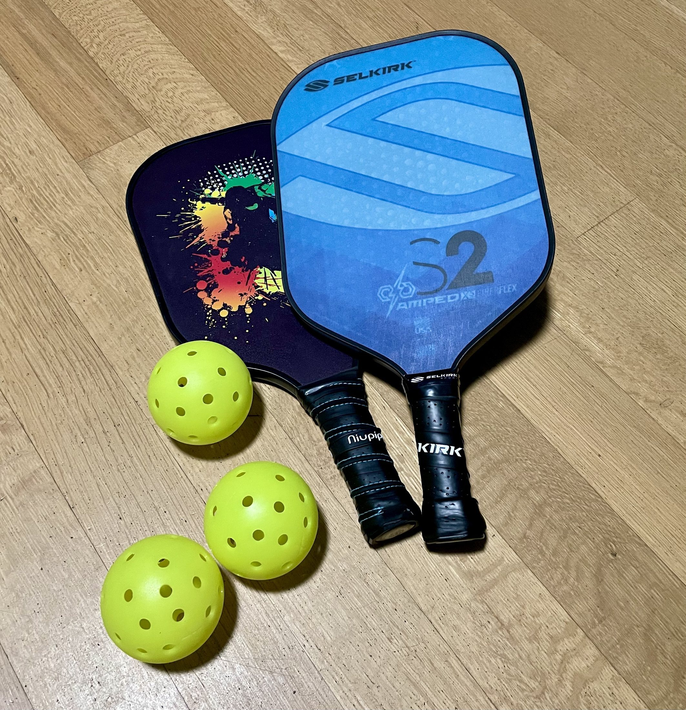
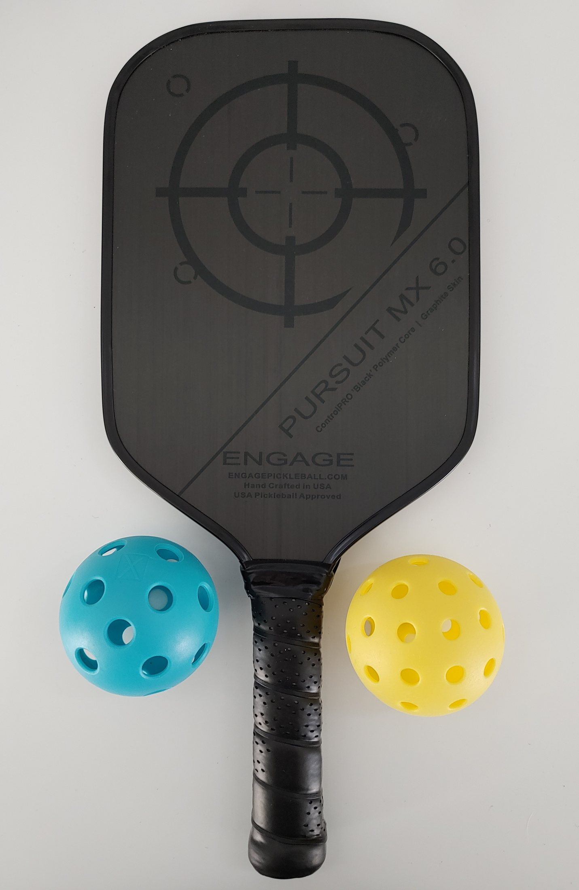
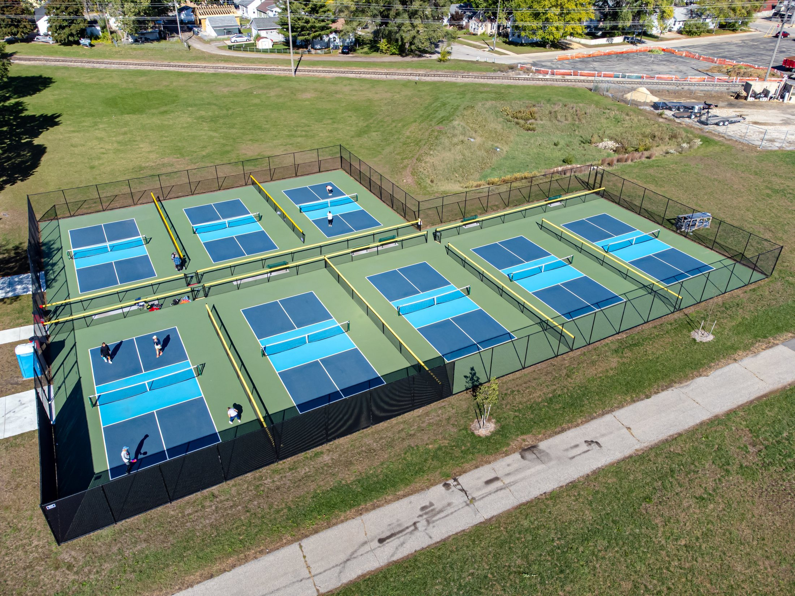
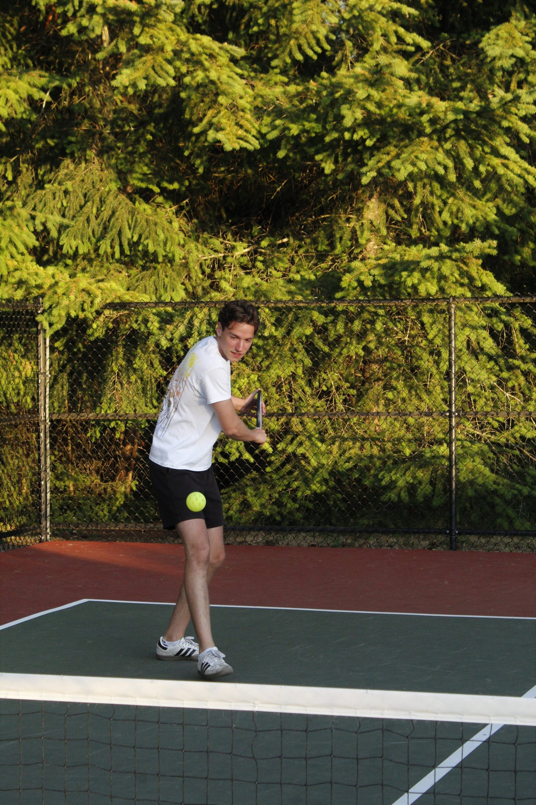
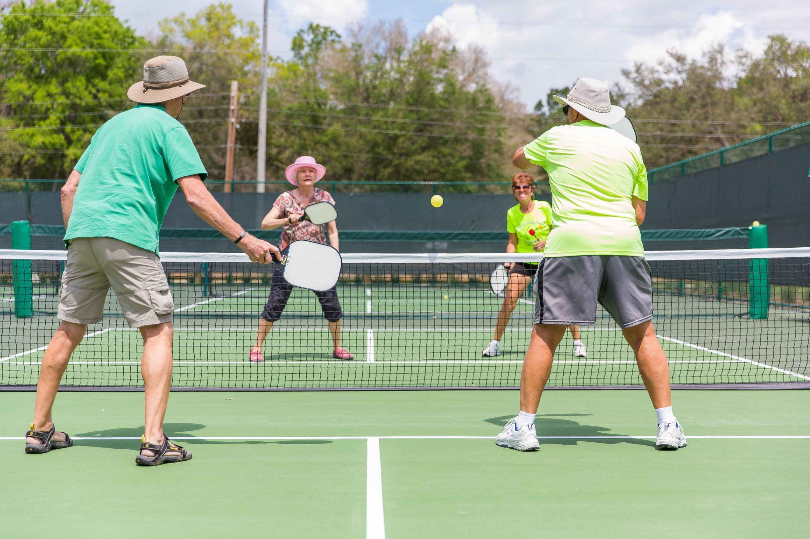
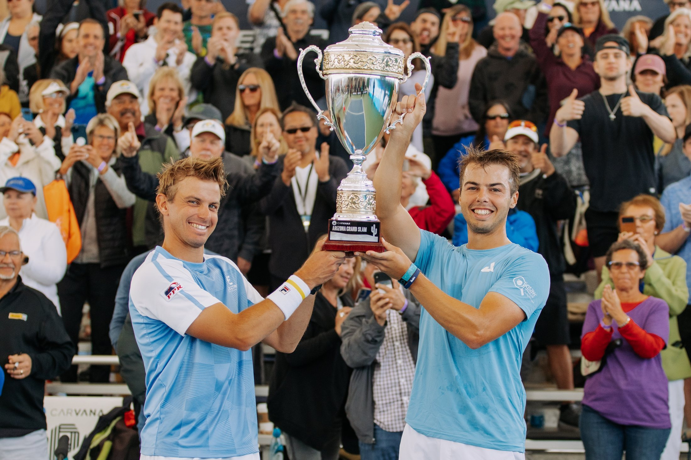

Pickleball
The Backyard Game That Took Over the World

The Backyard Game That Took Over the World

Imagine three bored families on a summer afternoon in 1965. No shuttlecock for badminton. No plan. Just a backyard, some ping-pong paddles, and a plastic ball full of holes. On Bainbridge Island, Washington, three dads -- Joel Pritchard, Bill Bell, and Barney McCallum -- challenged their kids to make up a brand-new game. And that is exactly what they did.

So what is pickleball? It is a paddle sport that borrows a little from tennis, a little from badminton, and a little from table tennis -- but it plays like nothing else. Two or four players use smooth, solid paddles to whack a lightweight plastic ball back and forth over a net. You can play indoors or outdoors, and the rules are easy enough to learn in minutes.
A pickleball paddle is solid -- no strings like a tennis racket. Early paddles were carved from plywood, but today they are made from super-light materials like carbon fiber. The ball weighs less than an ounce and is about three inches across. Pick it up and you will notice how light it feels compared to a tennis ball.


The court is the same size as a doubles badminton court -- 20 feet wide and 44 feet long. That is much smaller than a tennis court, so you do not have to sprint as far. But the most famous part of any pickleball court is a seven-foot zone on each side of the net called the Kitchen. If you are standing in the Kitchen, you cannot hit the ball out of the air. You have to let it bounce first!

Every point starts with an underhand serve hit diagonally across the court. Then comes the two-bounce rule: the ball must bounce once on each side before anyone can volley. This keeps the serving team from rushing the net and smashing the ball right away. It also means rallies last longer -- and longer rallies mean more fun. Games go to 11, and you have to win by 2.

But wait -- why is it called pickleball? Nobody agrees! Joel Pritchard's wife, Joan, said it reminded her of the pickle boat in rowing, where the crew is made up of leftovers from other boats. Pickleball was made from leftover equipment of other sports, so the name fit. Some people think the family dog, Pickles, inspired the name -- but the Pritchards say the dog actually came after the game and was named after it!
From that one backyard, pickleball spread slowly at first. The first real court was built in 1967. The first tournament was held in 1976. By 1990, people were playing in all 50 states. Then it exploded. Pickleball was named the fastest-growing sport in America four years in a row. By 2025, more than 24 million Americans played. Courts popped up in parks, schools, and recreation centers everywhere.

Today, kids, parents, and grandparents play side by side -- just like Joel, Bill, and Barney wanted when they made up that backyard game in 1965. The court is small enough that everyone can reach the ball. The serve is underhand, so beginners can start having fun right away. And the Kitchen rule keeps things fair. Maybe that is why pickleball is spreading around the world -- from Canada to Australia to India. All you need is a paddle, a ball, and someone to play with.